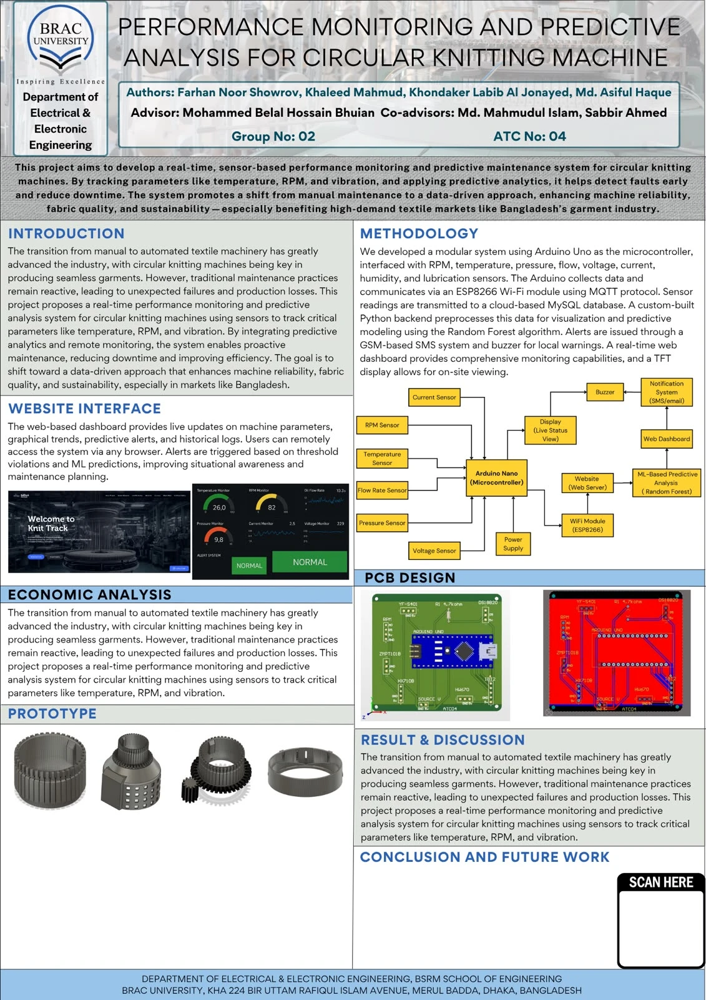
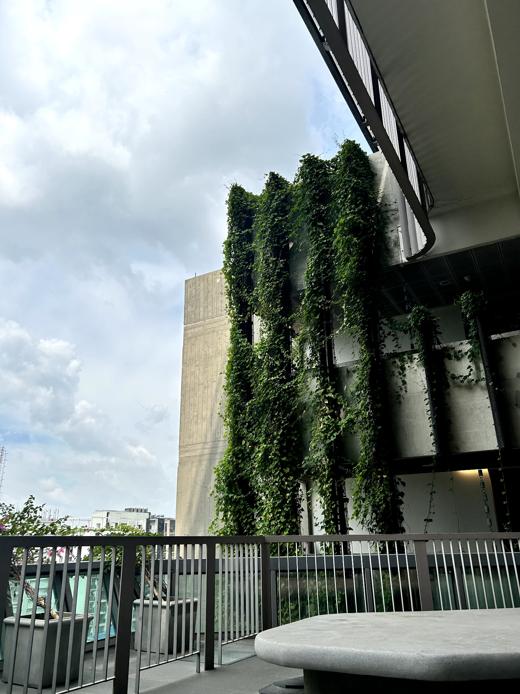
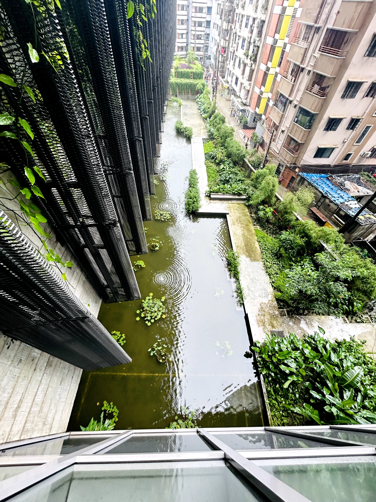
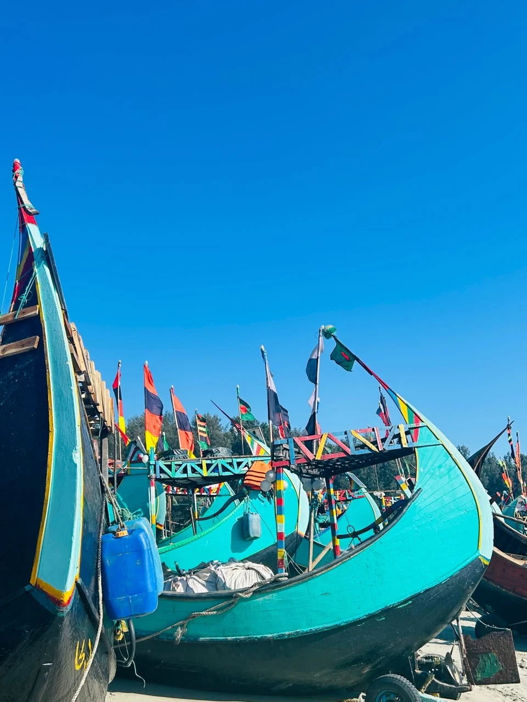

Portfolio · Dhaka, Bangladesh
Turning technical work into structured delivery.
Engineering professional working across project coordination, technical programme delivery, research operations and urban development.

Electrical and Electronic EngineeringBRAC University
2025Current focusProjects · Research · Urban Development

About Me
Engineering, research and a growing urban focus.
I work across engineering projects, technical programmes and research support. My EEE background and current GIS studies shape how I approach technology, cities and infrastructure.
BSc in Electrical and Electronic EngineeringMSc in GIS for Environment and Development - ongoingExperience in technical programmes and research operations
Read my story →Selected case studies
Two papers and one engineering project.
A short view of my work across energy systems, urban mobility and machine monitoring.

Journal Review
Smart Grid Using Machine and Deep Learning
A review of how machine learning and deep learning can improve smart-grid reliability, security, forecasting and decision-making.
Read overview →
IEEE Conference Paper
Optimal EV Charging Point Location Selection
A study of suitable EV charging locations in Dhaka using the Gravity model and Analytic Hierarchy Process.
Read overview →
Final Year Design Project
KnitTrack
A sensor-based monitoring and predictive-maintenance system for circular knitting machines.
Read overview →Experience
A practical mix of engineering, research and visual work.
Engineer - Planning, Marketing & Training
FaboTronix LimitedCoordinate technical programmes, institutional engagement, engineering communication and cross-functional activities.
View experience →Administrative Coordinator
Biomedical Science and Engineering Research Center (BIOSE)Supported research operations through procurement, logistics, documentation and stakeholder communication.
View experience →Freelance Graphic Designer & Video Editor
Independent WorkCreate social media designs, event materials, presentation visuals and short-form video content.
View experience →Visual perspective
Observing the built and natural environment.
Photography helps me notice how cities, architecture and environmental change shape everyday life.



Contact
Let's work on something meaningful.
Open to engineering projects, research collaboration, technical programmes and urban-development opportunities.